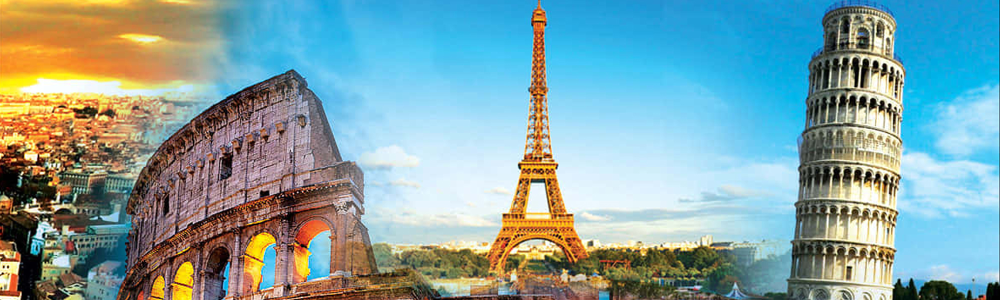
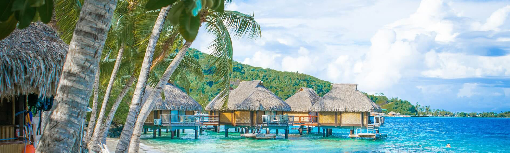

Destinations
Explore some of the most incredible destinations around the globe, each offering unique experiences and unforgettable adventures. From the bustling streets of Asia to the serene beaches of Oceania, our destination guides will help you find the perfect place to visit, whether you're seeking cultural enrichment, natural beauty, or thrilling activities.
Discover the diverse cultures, historic sites, and breathtaking landscapes of Asia. From the vibrant cities of Tokyo and Bangkok to the tranquil temples of Bali and the Great Wall of China, Asia offers an array of experiences for every traveler. Enjoy delicious cuisine, rich traditions, and stunning natural wonders.

Embark on a journey through Africa's vast landscapes, home to remarkable wildlife and stunning scenery. Explore the savannahs of Kenya, the deserts of Morocco, and the lush rainforests of Uganda. Africa's diverse cultures and breathtaking vistas promise an adventure like no other.
Experience the dynamic cultures and natural beauty of the Americas. From the lively streets of New York City to the scenic landscapes of Patagonia, the Americas offer a rich tapestry of experiences. Discover world-famous landmarks, vibrant cities, and unspoiled nature.

Step back in time with Europe's rich history and architectural marvels. Wander through the romantic streets of Paris, explore the ancient ruins of Rome, and admire the gothic cathedrals of Barcelona. Europe's diverse cultures and landmarks offer a treasure trove of experiences.

Discover the beauty and diversity of Oceania, from the stunning beaches of Australia to the unique cultures of New Zealand and the South Pacific Islands. Enjoy outdoor adventures, vibrant marine life, and the warm hospitality of the region's inhabitants.
Each of these regions offers a wealth of opportunities to explore and enjoy, whether you're looking for relaxation, adventure, or cultural immersion. Click on the links to dive deeper into each destination and find out what makes them special. Our comprehensive guides provide detailed information on top attractions, travel tips, and essential insights to help you plan your next trip with ease.